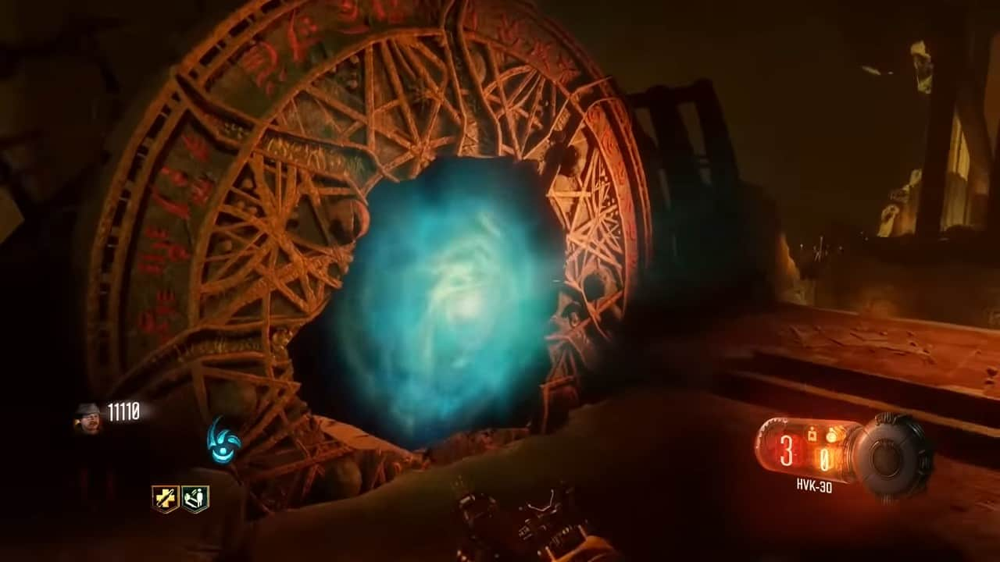
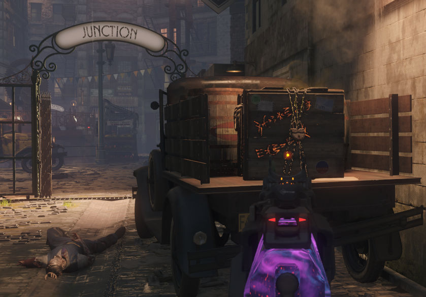
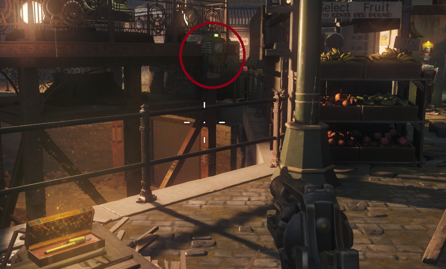
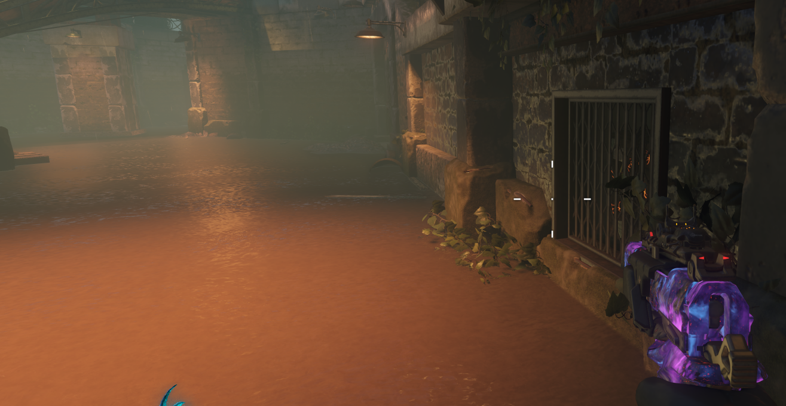
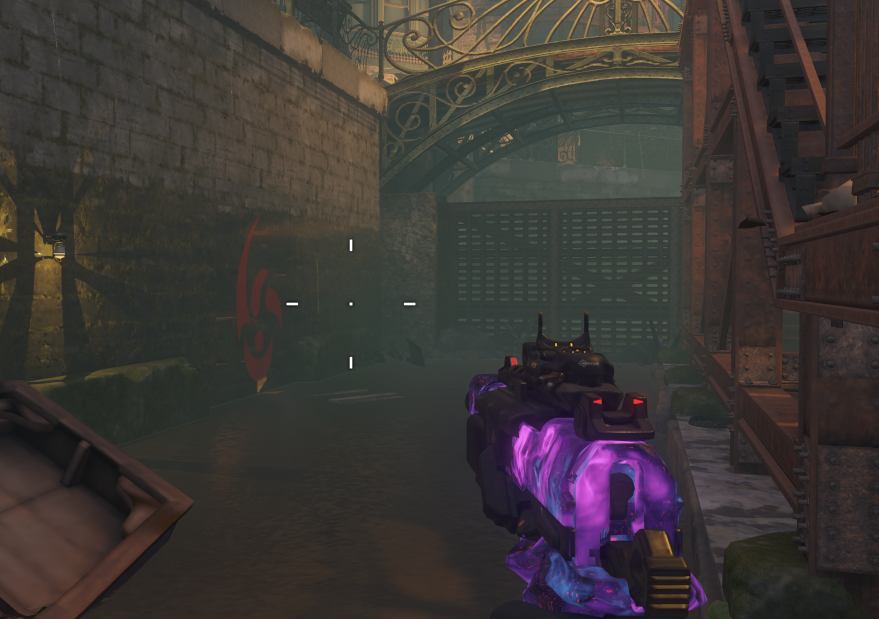
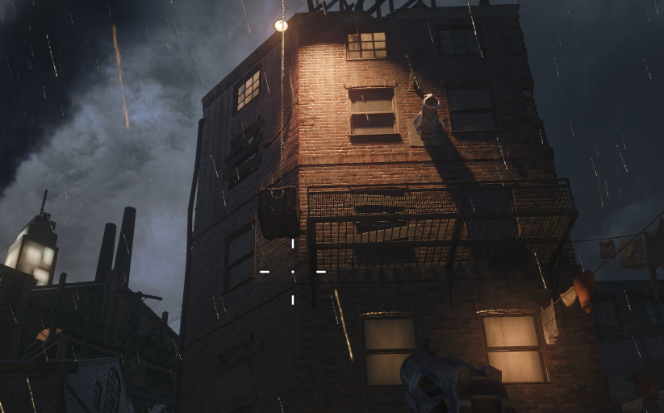
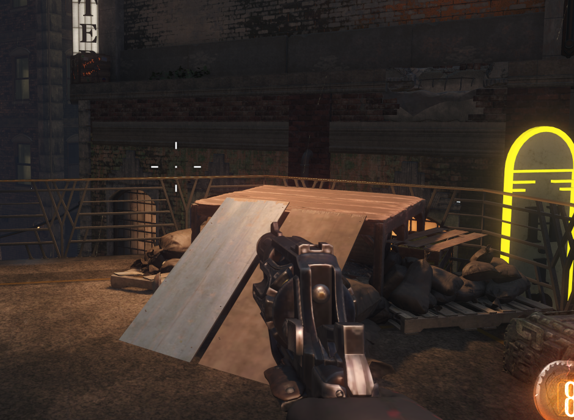
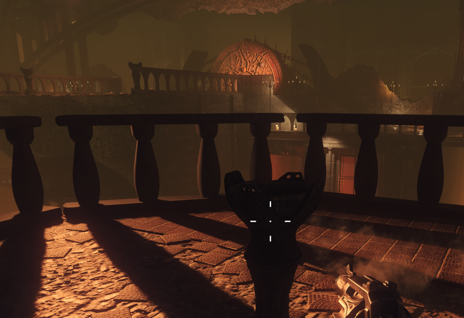
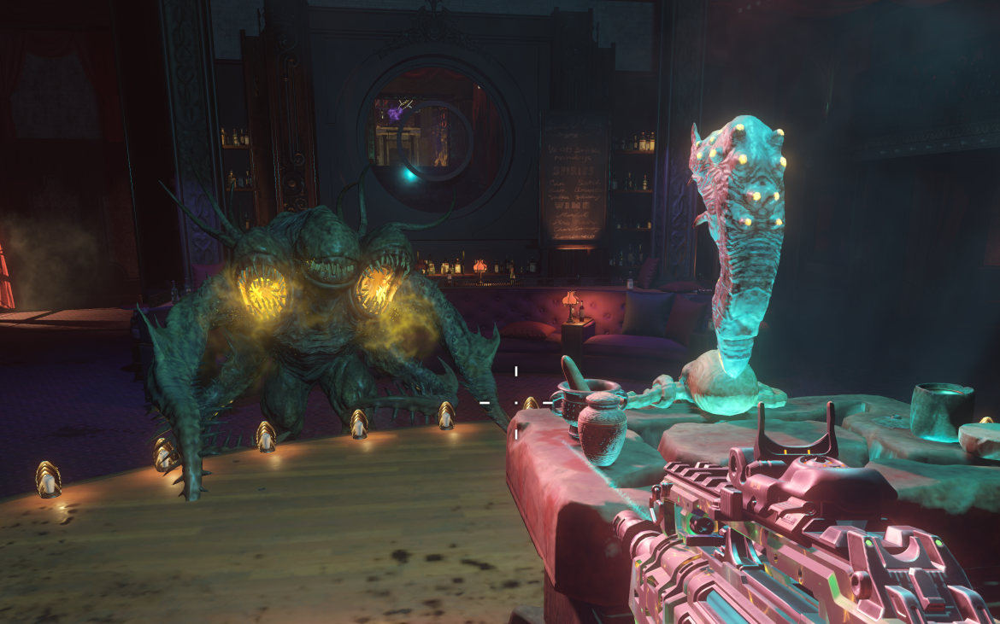

Pack-A-Punch (Shadows of Evil)

Realizar los 4 rituales: Ubicados en altares en el Spawn, en Footlight, en Canals y en Waterfront. Será necesario el modo bestia para recoger los objetos de ritual que se encuentran en cajas y activar zonas de electricidad
Llave de invocación (Spawn): En una caja que romperemos nada más empezar. 
Spawn (El mago): Una pluma activando la grúa con electricidad en la zona central.

Canals (Detective): Romperemos la caja y activaremos la electricidad en los canales.


Waterfront (Luchador): Usaremos el gancho para subirnos a un balcón y romperemos la caja.

Footlight (Bailarina): Saltando en modo bestia podremos llegar al balccón y romper la caja.

Ritual final: Romperemos cualquier puerta de portal que se encuentran en todas las zonas y la atravesaremos. Una pared con símbolos se caerá y colocaremos los gusanos obtenidos en cada uno de los rituales en su cetro. Por último iniciamos el ritual.

Notas: Tras conseguir el segundo y cuarto gusano aparecerá un Margwa.
